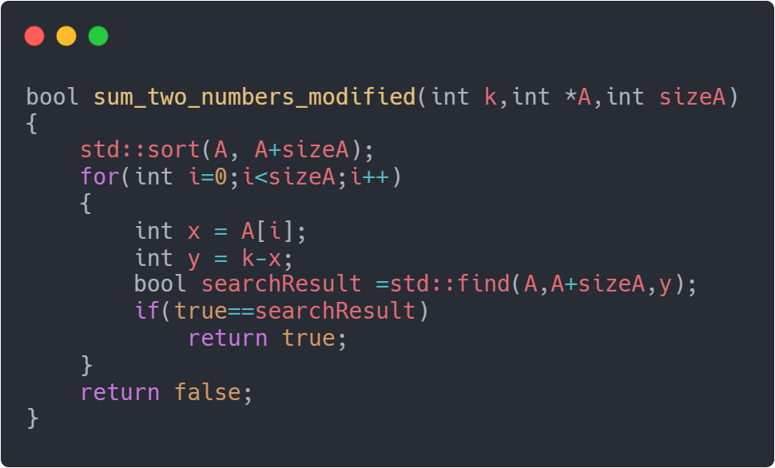

1.Проблема суми
Нехай задано деяке ціле число k і масив А з n невпорядкованих цілих чисел. Необхідно знайти чи є серед чисел цього масиву пара {x, y} ⊂ A така, що x + y = k. Ця задача є частковим випадком проблеми підсум, яка полягає в пошуку будь якої кількості чисел серез елементів масиву таких, що в сумі дають число k.
Найпростішим рішенням буде просто перебрати усеможливі пари елементів (x, y) з масиву A. Якщо x + y рівно k, функція перевірки просто повертає true і завершує свою роботу. Для цієї перевірки не потрібно жодної додаткової пам'яті, кількість додавань і перевірок в найгіршому випадку рівна O(n2) в найгіршому випадку.
Звичайно,такий код написати дуже просто і швидко. Але у випадку коли наш масив чисел перевищуе 10,000 елементів, пошук такої пари може затягнутись.
Ми хочемо покращити наш код. Можна відмітити якийсь елемент x з масиву A, потім можна перевірити чи є елемент y = k - x в масиві A, тепер це звичайна проблема пошуку числа в масиві. Оскільки для кожного х, нам необхідно здійснити пошук і перебрати всі елементи масиву,складність нашого алгоритму залишиться O(n2). Альтернативою даного методу може бути спочатку відсортуавти масив A і потім для кожного елементу x ∈ A, здійснити бінарний пошук існування його пари, тоді складність алгоритму складе вже O(n log n).
В пошуках алгоритму,що буде відпрацьовувати за лінійний час, ми можемо спробувати використати булевий масив, для представлення елементів з масиву A. В цьому масиві і-та позиція в масиві буде містити '1' (or 'true') якщо і тільки якщо i належить масиву А.
Відповідне доповнення до кожного елементу тоді можна буде знайти за константний час. Водночас,такий підхід в адресації, коли місце елемента залежить від якогось ключа і і тільки i, має серйозну проблему: Місце яке необхідно виділити під такий масив залежить від значення найбільшного елемента в початковоому масиві A, а не від розміру масиву А. Ми досягли шуканої швидкодії алгоритму, але, на жаль, оскільки це число(w) може бути представлене у вигляді log2 w бітів, це означає експотенціальний ріст розмірності в пам'яті.

Постає питання чи можна закодувати елементи масиву так, щоб необхідна кількість пам'яті не була
такою величезною?
Що ж, відповіддю як можна догадатись з назви лекції є геш-таблиця
2.Геш-таблиця
Геш-таблиця(2) — структура даних, що реалізує інтерфейс асоціативного масиву, а саме, вона дозволяє зберігати пари (ключ, значення) і здійснювати три операції: операцію додавання нової пари, операцію пошуку і операцію видалення за ключем.
Важлива властивість геш-таблиць полягає в тому, що, при деяких розумних припущеннях, всі три операції (пошук, вставлення і видалення елементів) зазвичай виконується за час O(1). Але при цьому не гарантується, що час виконання окремої операції малий, з певною імовірністю час може бути сумірним із пошуком у списку. З ростом коефіцієнта заповнення таблиці ця імовірність, і, відповідно, середній час виконання операцій, ростуть. Тому при досягненні деякого значення коефіцієнта заповнення необхідно здійснювати перебудову індексу геш-таблиці: збільшити розміри масиву H і заново додати в порожню геш-таблицю всі пари.
Геш-таблиця містить в собі деякий масив H, елементами якого є пари (геш-таблиця з відкритою адресацією) або списки пар (геш-таблиця з ланцюжками). Виконання операцій в геш-таблиці починається з обчислення геш-функції від ключа. Отримане геш-значення i = hash(key) відіграє роль індексу в масиві H. Після цього операція (додавання, видалення, пошук) перенаправляється об'єктові, який зберігається у відповідній комірці масиву H[i].
3.Поняття колізій в геш-таблиці та парадокс дня народження
Скільки людей має бути в кімнаті, щоб ви точно могли сказати що хоча б у двох з
них день народження в один і той самий день?
Відповідь: 367(оскільки, враховуючи 29 лютого,в році може бути до 366 можливих днів
святкувань дня народження)
Це питання було не дуже складним, але як ви гадаєте скільки людей повинно бути в кімнаті,
щоб імовірність того, що двоє з них мають день народження в один і той самий день складала 50%?
Відповідь: 23. Навдивовижу мале число. Насравді, необіхно лише 50 людей щоб гарантувати
імовірність в 97%,а серед 70 людей двоє можуть мати день народження в той самий день з
імовірністю вже 99.9%.
Як взагалі так може бути? На щастя в нас є математика,щоб це довести.
Нам не потрібно рахувати ймовірність, з якою двоє людей народились в один день,достатньо
порахувати ймовірність, з якою вони цього не зробили.
Тож перша людина може мати день народження в будь який день року(365/365).
Тож друга людина може мати день народження в будь який день року,крім того в який було день
народення першої людини(364/365).
Тож перша людина може мати день народження в будь який день року, крім тих, коли перші двоє
чоловік святкували своє день народження(363/365).
...
Тож n-людина може мати день народження в будь який день року, крім тих днів коли дні нароження
святкували всі до неї(1 – (n-1)/365).
Тоді ймовірність що всі вони не ділять між собою жодень день народження становить 1 x (364/365)
x (363/365) x (362/365) x …. x (1 – (n-1)/365).
Як можна побачити,провівши деякі обчислення,воно дуже швидко спадає. Відповідно ймовірність того
що двоє людей мають день народження в той самий день росте.
Якщо розглядати кожну людину,як окремий елемент, а її день народження як ключ,то вже у випадку
23 елементів такого "масиву" який треба розмістити в 365 комірок трапиться ситуація коли дві
людини потрапили на одну й ту саму комірку. Це називається колізія.
В деяких особливих випадках вдається взагалі уникнути колізій. Наприклад, якщо всі
ключі елементів відомі заздалегідь (або дуже рідко змінюються), тоді для них можна знайти деяку
досконалу геш-функцію[en], яка розподілить їх за комірками геш-таблиці без колізій. Геш-таблиці,
які використовують подібні геш-функції, не потребують механізму розв'язання колізій, і
називаються геш-таблицями з прямою адресацією.
Колізії можуть траплятись дуже часто, все залежить від розміру геш-таблиці, кількості
елементів, підібраної геш-функції. Механізм розв'язання колізій — важлива складова будь-якої
геш-таблиці. В залежності від способу вирішення колізій геш-таблиці поділяють на таблиці з
ланцюжками та з відкритою адресацією. Розглянемо детальніше кожен з цих типів
4.Геш-таблиця з ланцюжками
Геш-таблиця(2) — структура даних, що реалізує інтерфейс асоціативного масиву, а саме, вона дозволяє зберігати пари (ключ, значення) і здійснювати три операції: операцію додавання нової пари, операцію пошуку і операцію видалення за ключем.
Тепер уявіть що у вас є список з 10,000,000 товарів що були куплені за останній рік в якомусь інтернет-магазині,наприклад Розетці. Ви дуже хочете взнати чи є серед цього списку книжка під назвою "Про мишей та людей". Як би ви це зробили?.
Можна просто перебрати всі елемента в пошуках "Про мишей та людей",але у найгіршому сценарії тоді ваша програма потребуватиме виконання 10,000,000 перевірок,щоб взнати чи є серед цих товарів якийсь під назвою "Про мишей та людей". Натомість, якщо б ви захешували всі елементи і зберегли їх в хеш таблицю, перевірка на наявність елемента буде завжди однаково швидкою,незалежно від розмірів масиву. Незважаючи на те що, доведеться написати трохи більше коду,він виконаєтсья набагато швидше.